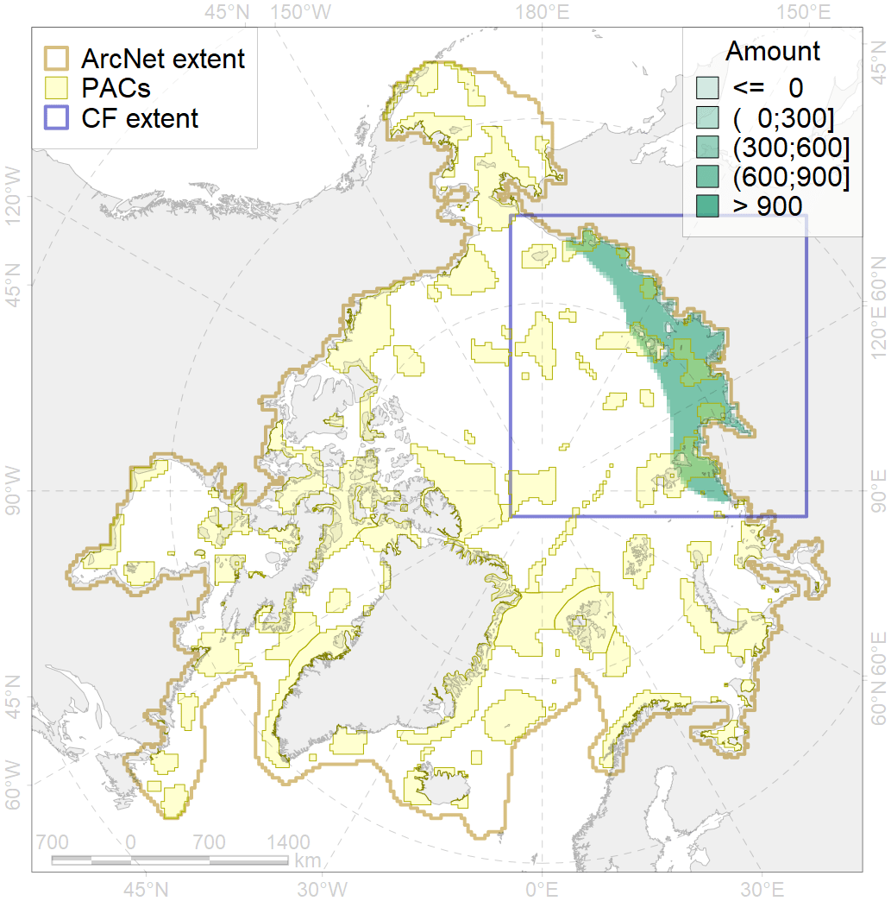
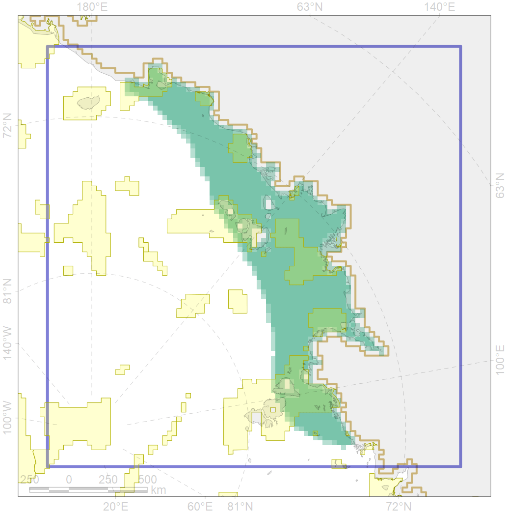

4036

| CF ID | 4036 |
| CF Name | Distribution of the Borisov’s Arctic cod (Arctogadus borisovi) |
| Time Period | 1950-2010s |
| Source(s) | Popova in Reshetnikov, 2013 |
| Seasonality | January-December |
| Depth Horizon | 0-50 |
| Methodology | Compiled from literature sources based on field observations |
| Author Name | N. Chernova |
| Notes | |
| Conservation Target Set in the Scenario | 0.132 |
| Conservation Target Achieved in the Scenario | 0.300 (Scenario: 227.4%) |
| PAC ID | Proportion in the PAC | Contribution to ArcNet Target Achievement | PAC’s Contribution to the Achieved Target |
|---|---|---|---|
| 8 | 2.5% | 16.0% | 7.0% |
| 9 | 0.8% | 3.6% | 1.6% |
| 10 | 2.2% | 12.7% | 5.6% |
| 11 | 2.8% | 20.6% | 9.1% |
| 12 | 8.6% | 58.1% | 25.6% |
| 13 | 3.4% | 24.1% | 10.6% |
| 14 | 7.9% | 54.3% | 23.9% |
| 15 | 0.1% | 0.6% | 0.3% |
| inner | 28.3% | 190.1% | 83.6% |
| outer | 71.7% | 37.3% | 16.4% |